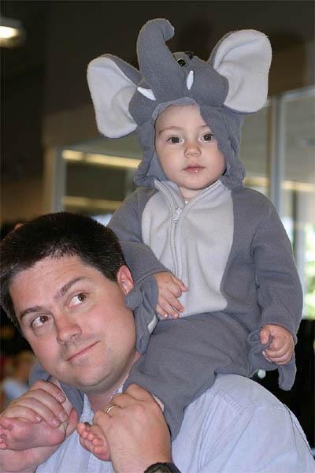

| 9/7/03 | |
|---|---|
| We realise that Gryffin's Fan Club is anxiously awaiting new photos. We have been awfully busy of late, and so offer up these few teasers from our early September weekend in Carmel.
As you can see at right, Gryffin tried on a sleeper/costume at the Baby Gap in Gilroy. Despite causing a near riot in front of the changing room mirrors, we decided to pass on the purchase. After 6 hours of shoveling, and some carving, we won the big prize for the Best Traditional Sand Castle. Afterwards we let the boys play in the courtyard for a bit while packing up the tools of the trade. The main tower in the background lost 3 feet of height just 45 minutes before the official start of judging. While disappointing, a judge told us that our award had been in question until collapse confirmed that we were not using illegal binders in the sand. |  |